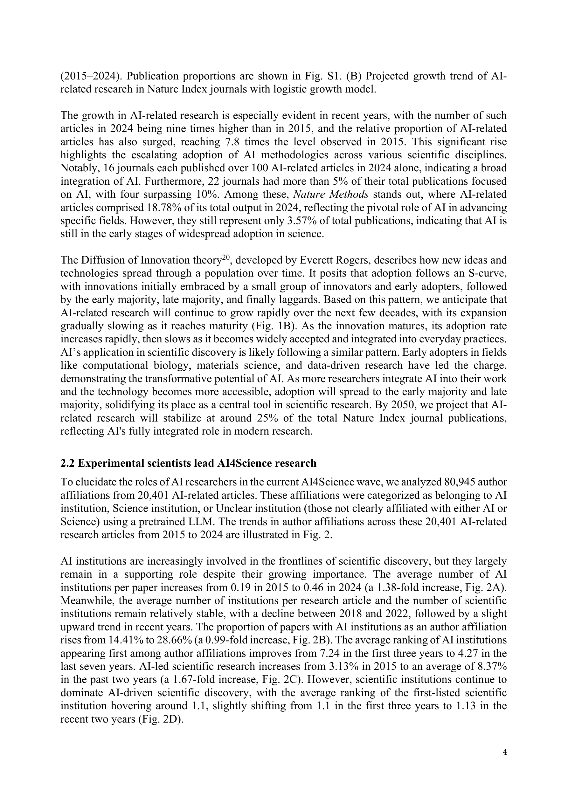
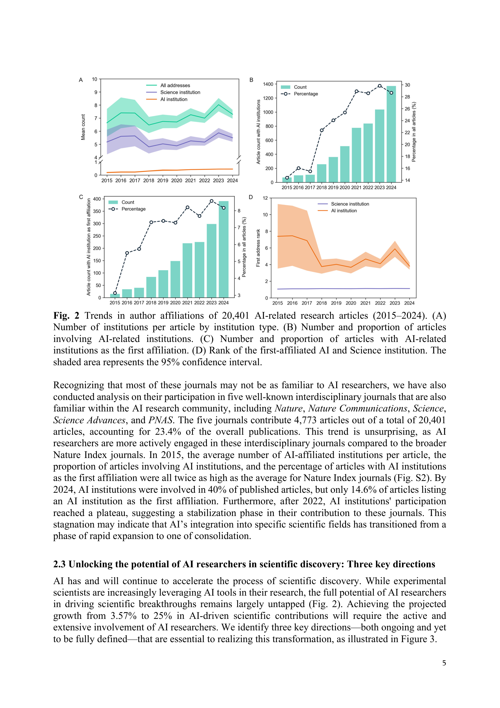
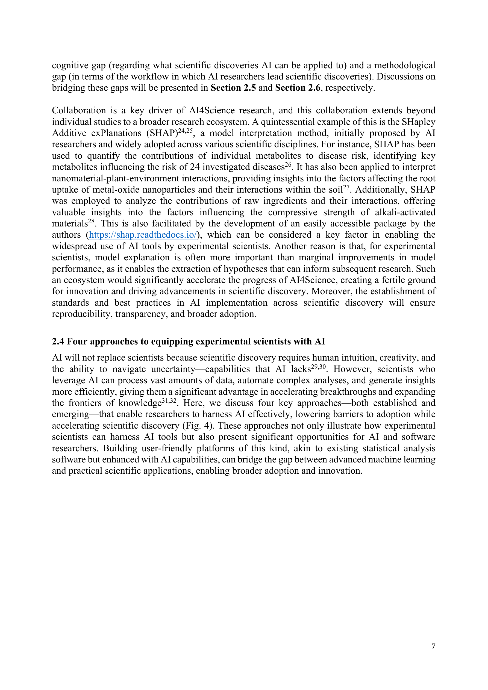
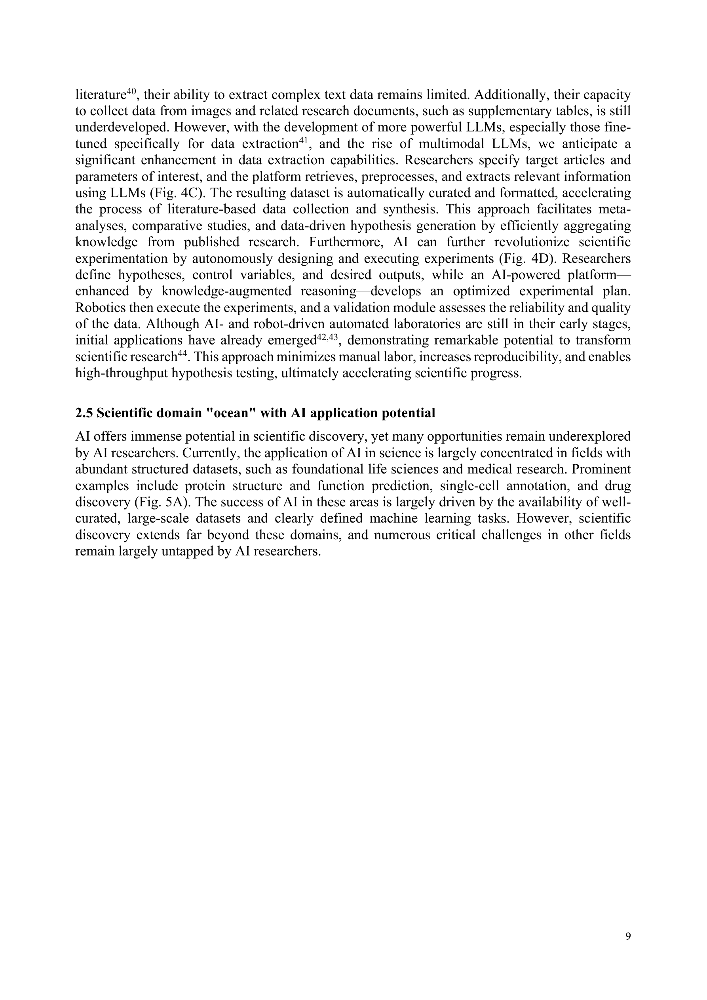

Figure 1
Figure 1
AI for Science(AI4Science)의 성장 현황을 Nature Index 145개 저널에 게재된 20,401편의 AI 관련 논문을 분석하여 정량적으로 파악하고, AI 연구자들이 과학적 발견에서 주도적 역할을 하지 못하는 현실적 간극을 진단한 논문이다. 혁신의 확산(Diffusion of Innovation) 이론에 기반하여 AI4Science의 점유율이 2024년 3.57%에서 2050년 약 25%로 성장할 것으로 전망하며, AI 연구자를 "도구 제공자"에서 "핵심 기여자"로 전환하기 위한 세 가지 전략적 방향과 구체적 워크플로우를 제안한다.

Figure 2
지난 10년간 AI4Science 논문이 9배 증가했음에도, AI 관련 연구의 거의 90%가 여전히 실험 과학자 주도로 수행되고 있다. AI 연구자가 첫 번째 소속기관(first affiliation)인 논문은 전체의 약 8%에 불과하며, 2022년 이후 이 비율의 증가세가 정체되고 있다. 동시에 AI 분야의 인재 포화로 신진 AI 연구자들의 진로가 좁아지고 있어, AI 연구자의 과학적 발견 참여를 확대하는 것이 인재 파이프라인 지속가능성과 AI4Science 성장 모두에 필수적이다.

Figure 3

Figure 4

Figure 5
AI4Science의 현재 상태를 "AI 연구자의 참여 부족"이라는 독특하고 시의적절한 관점에서 진단한 논문이다. 20,401편의 논문 분석을 통해 "AI 논문의 90%가 실험 과학자 주도"라는 정량적 증거는 설득력 있으며, NeurIPS'24에서의 AI 연구자 불안감이라는 현실적 맥락과 맞물려 강한 공감을 유발한다. 세 가지 전략적 방향과 워크플로우 제안은 AI 연구자에게 실질적 로드맵을 제공한다. 다만, 2050년 25% 전망은 단순 로지스틱 모델에 의존하여 불확실성이 크며, 제안된 전략들의 실효성에 대한 실증적 근거가 부족하다. 또한 기관 소속 기반의 "AI 연구자" 정의는 학제간 연구가 일상화된 현실에서 다소 조잡한 분류이다. 그럼에도, AI for Science 분야에 진입하려는 AI 연구자에게 유용한 방향 설정 문서로서의 가치가 있으며, 연구 정책 수립자에게도 AI 인재 활용의 구조적 병목을 환기시키는 참고 자료가 될 수 있다.